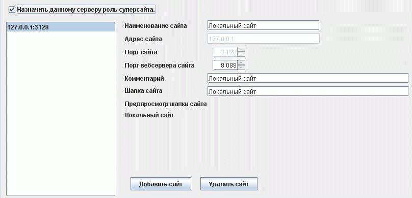
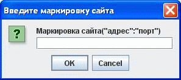

Формирование домена
Домен это объединение нескольких сайтов в единую структуру. Сайт это один экземпляр развернутой и эксплуатируемой системы со своим сервером, СУБД и пользователями ими пользующимися. Объединить сайты требуется исходя из необходимости регистрироваться на любом из них используя одну точку доступа или для получения консолидированной отчетности всех сайтов домена. Для такого объединения служит суперсайт. Суперсайт это обычный сайт домена, который имеет у себя в настройках список сайтов домена, ключая себя, и умеет взаимодействовать с ними. Доменных структуру не возможно использовать в режиме работы без использования СУБД.
Чтобы превратить обычный сайт в суперсайт достаточно и необходимо в приложении
для администрирования на закладке " Сеть и таймауты" поставить галочку "
Назначить данному серверу роль суперсайта". При этом откроется
список сайтов домена. Необходимо сформировать этот список с заполнением всех
необходимых атрибутов. Все настройки при этом хранятся в СУБД, признак
суперсайта в net.super_site, а список сайтов в таблице
sites.
Для использования пункта регистрации для взаимодействия
со всеми сайтами домена через суперсайт необходимо в командной строке при
запуске приложения пункта регистрации указать ключ super.
Других
настроек не требуется. Вся работа через суперсайт будет идти со всем доменом там
где это требуется. В качестве суперсайта можно инсталлировать систему, которая
реально не будет использоваться для обслуживания клиентов, а только
предоставлять необходимые сервисы для организации работы домена.
При создании
нескольких сайтов с использованием одного компьютера в качестве сервера
строго следите за тем, чтобы номер порта сервера и номер порта
отчетного вэбсервера был уникален для каждого сайта.

Описание кнопок:
Чтобы добавить сайт в домен, надо нажать на кнопку "Добавить сайт".
Вам будет предложено ввести адрес и порт в формате "адрес:порт", например: 192.168.0.43:3128

Чтобы удалить сайт в домене, надо нажать на кнопку "Удалить сайт".
Редактирование сайтов:
Выбрав сайт из уже созданных сайтов, в правой части окна есть текстовые поля, которые можно редактировать.
Доступные поля для редактирования:
Наименование сайта,
Порт вебсервера сайта,
Комментарий,
Шапка сайта.
Примечание: Шапку сайта можно вводить в формате HTML.